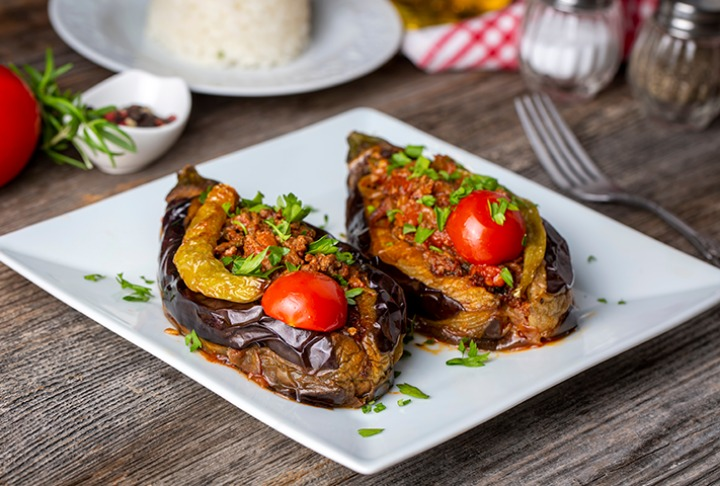

Karniyarik

Turkish Stuffed Eggplant Karnıyarık is a fantastic healthy dinner. These are ground beef stuffed eggplants packed with flavors. The recipe is very easy to make and can even be made in advance to save you time. It is freezer friendly too!
- 6 eggplants
- 250 g ground beef
- 1 onion
- 2 green peppers
- 1 tomato
- 1 tablespoon tomato paste
- 1 teaspoon paprika
- 1 clove of garlic
- Tomato and pepper slices to top it.
Steps
- Take the stem ends off the eggplants and peel strips off with a vegetable peeler or a knife in a zebra pattern (this will help them hold their shapes better)
- Soak them in salty water for 20 mins
- Heat the vegetable oil in a frying pan with high sides and fry the whole eggplants on all sides
- Add in the ground beef and cook until it turns light brow
- Stir in the tomato paste, paprika, black pepper, salt and cumin
- Make indents in the centre to create space for the filling
- Bake at 190 degrees celsius until the tomato and pepper slices start turning brown.